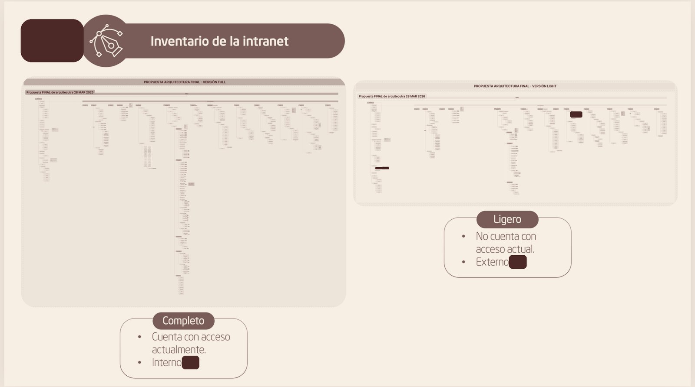
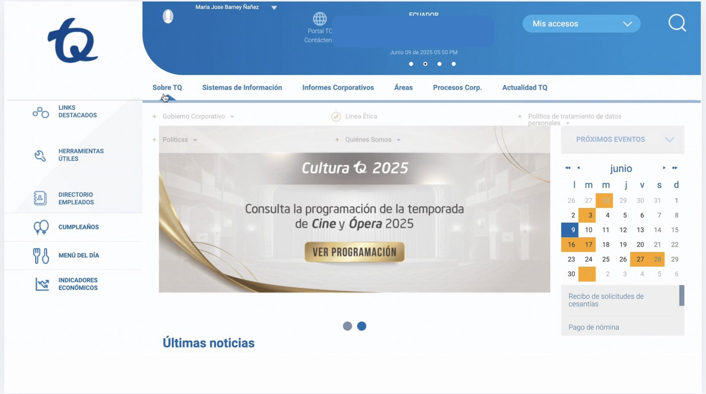
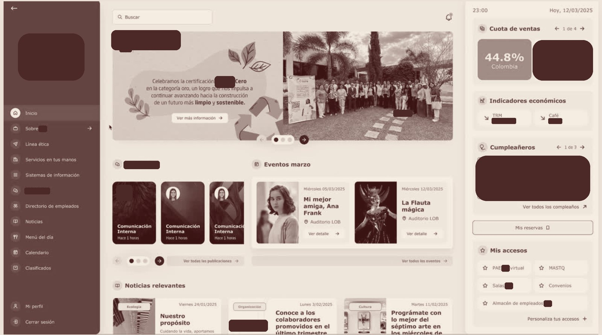

Nine years, 66 systems hanging off it
The redesign started in 2023 and was planned in four stages (diagnosis, design, build, evaluation) over three phases and four semesters. I came in for Phase 0, UX design: information architecture, user profiles and access levels, wireframes and high-fidelity prototypes with the agency, then the initial HTML build with the development vendor and IT.
I split my time 70/30 between this project and supporting the Internal Communications team, with weekly priorities reviewed one-on-one with my manager.
I rewrote my own objective
Original objective
Coordinate the redesign’s implementation, increasing use and interaction by 50% over the next year.
What I proposed
Coordinate the build with IT and the vendor, validating at least 90% of key features and documenting 100% of requirements for development, within 6 months.
The original measured adoption of a product that didn’t exist yet, over a year, when I had six months and a scope that ended at the build. I reframed it with the SMART framework into something specific, measurable and inside my real reach, and broke it into five sub-objectives, each with its own target and deadline.
Four methods, one question: what goes where
- Card sorting with key users to decide the new categories.
- Short usage surveys on current features, to decide which ones earned a place in the redesign.
- An email-perception survey in Microsoft Forms: employees sorted real subject lines by the sender they’d expect them from, across three internal categories: operational, wellbeing and institutional. The goal was a sending guide so six different areas would stop flooding the same inbox with overlapping messages.
- Gamified research alongside iterative feedback on the inventory.
The inventory showed who was missing
I built a database of the intranet: 191 sections segmented, more than 80 owners and administrators identified, profiles and access levels, the network user base and current coverage, with a completion formula for weekly reporting.
The main internal channel only worked for people already on the corporate network. Plant staff, the bulk of the company, were outside it.
So I proposed segmenting the intranet into two versions. Full, reachable from the internal network. Light, reachable from outside, with access by a one-time code sent by email or SMS. IT defined the access system with us, and an initial purchase of 100,000 SMS was approved.



Two versions means twice the cost
Some people opposed having two versions because of the extra development and the cybersecurity implications of opening access from outside the network. Both concerns were legitimate.
It was resolved by putting the long-term benefits on the table (coverage was one of the project’s four founding requirements), after which the two-version approach was allowed into the project plan.
Ideas that waited
I designed an internal notification system with use cases and documented interfaces, split into automatic and manual notifications. One concrete case: reminding people to sign up for special menus before the 10:30 cutoff, with a visible countdown and a “Remind me” button that triggers a notification at 7:00 that day. The countdown was planned for implementation; the full system was left as a future improvement. An A/B test for feature validation was also archived.
Measured, including what fell short
Qualitatively: better usability and interaction, a prototype for approvals and requests, the intranet positioned as a stronger channel, a brand-new mobile channel, and a greater sense of closeness for plant staff.